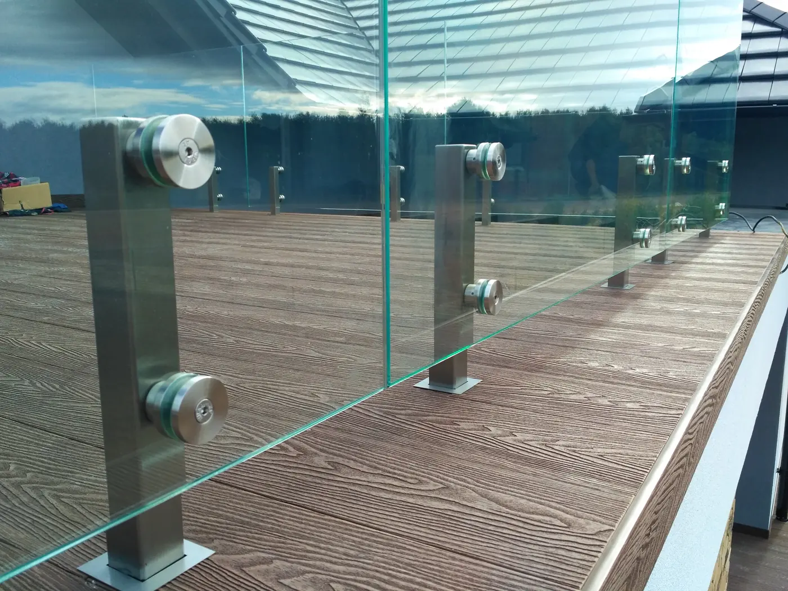
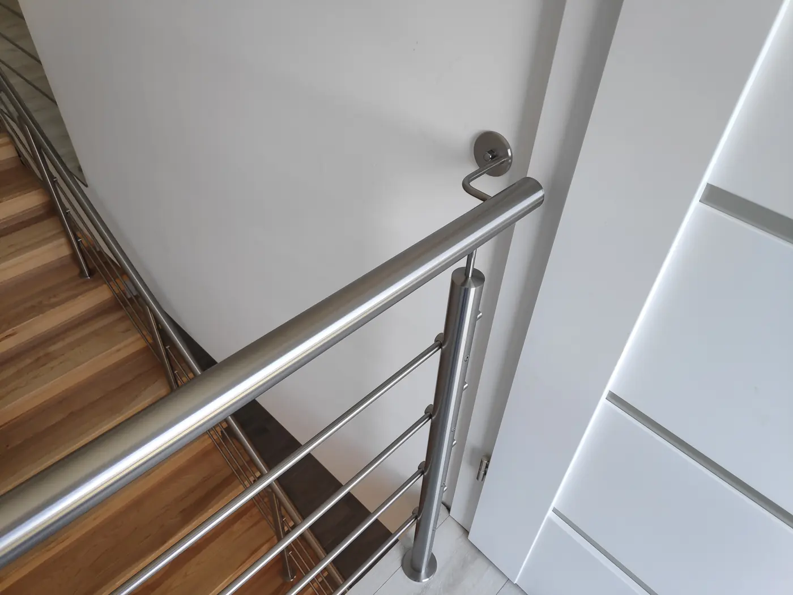
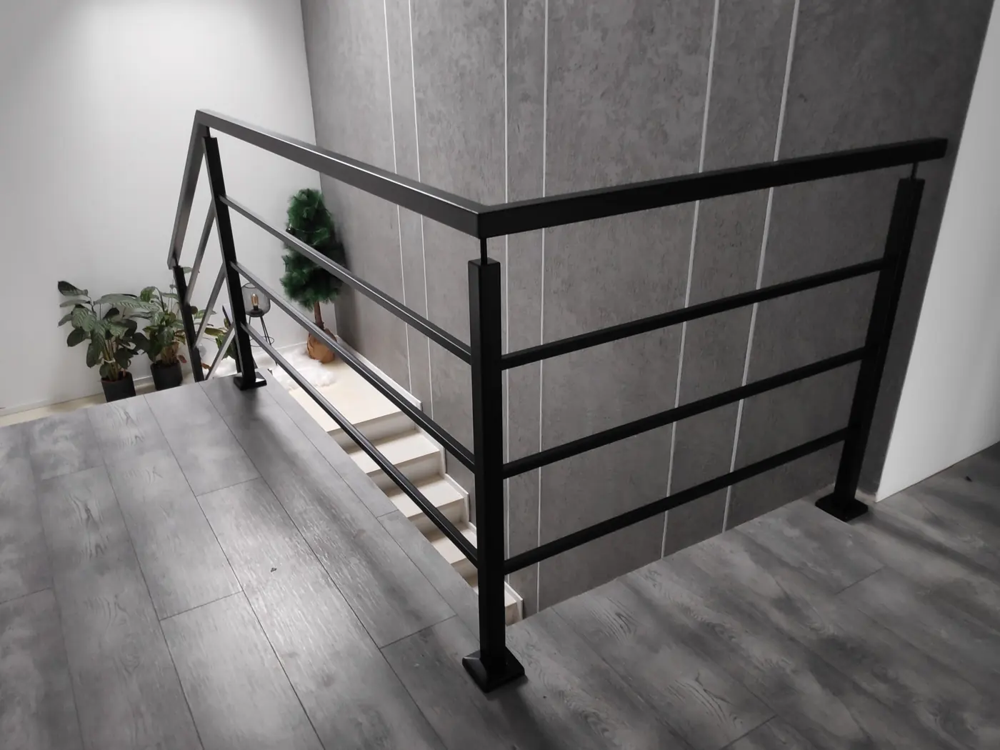
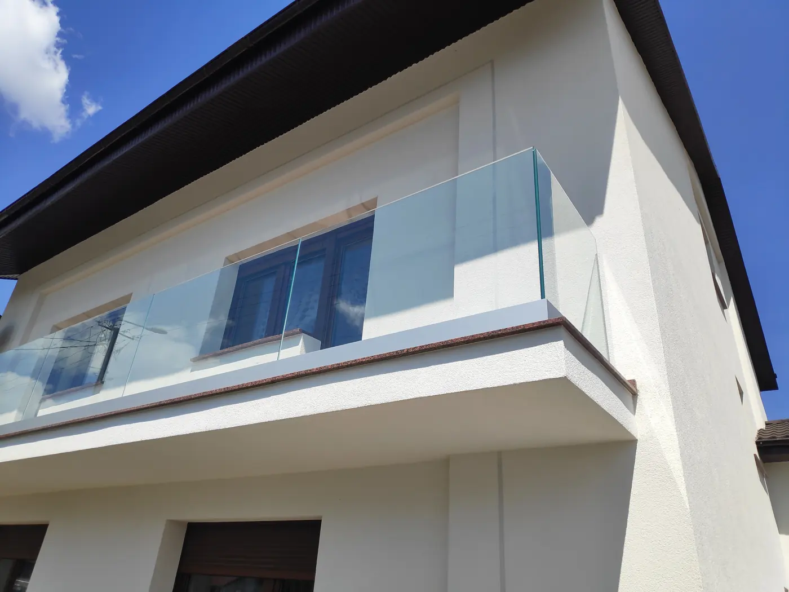
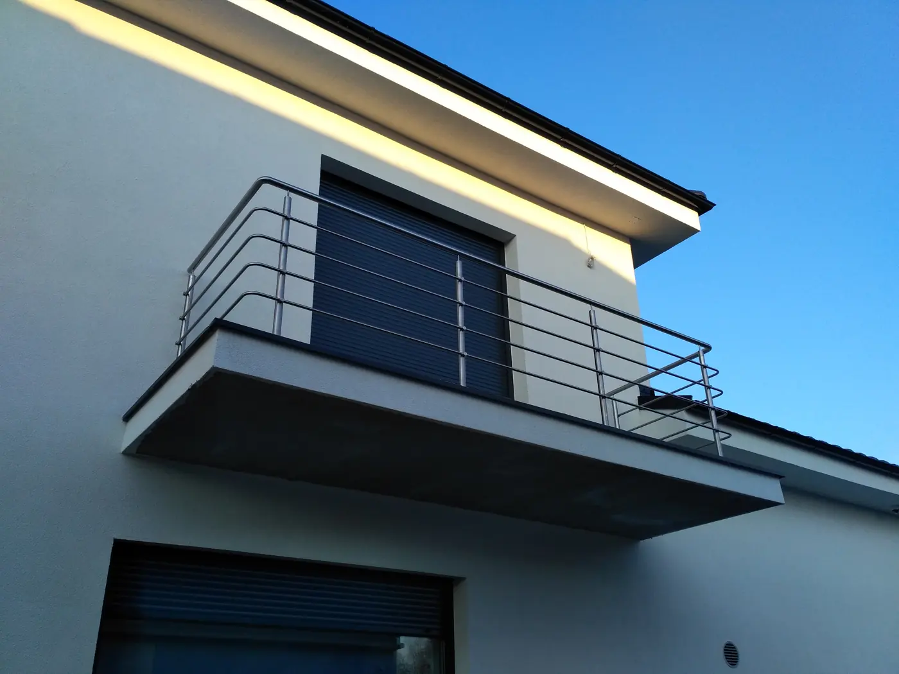
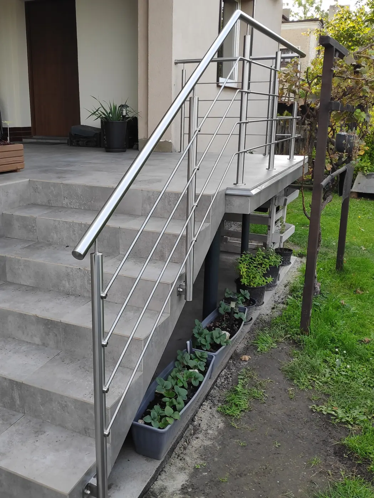
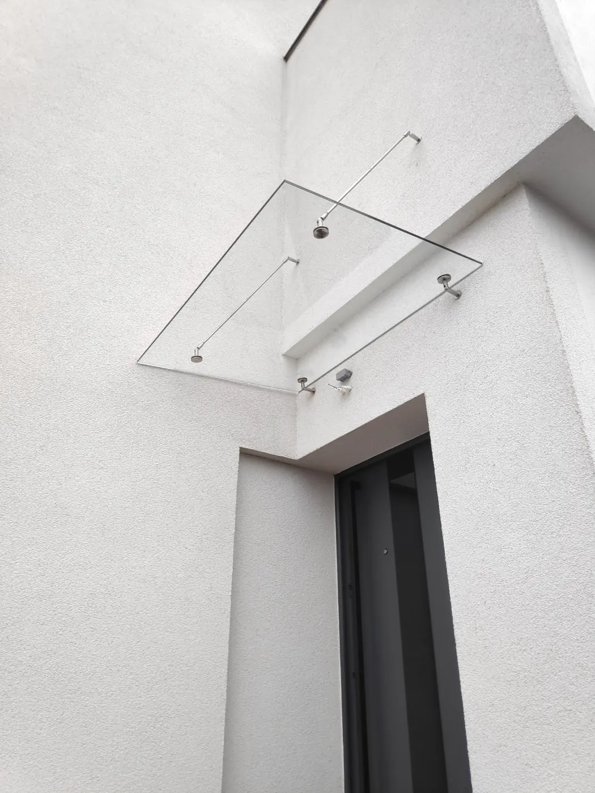
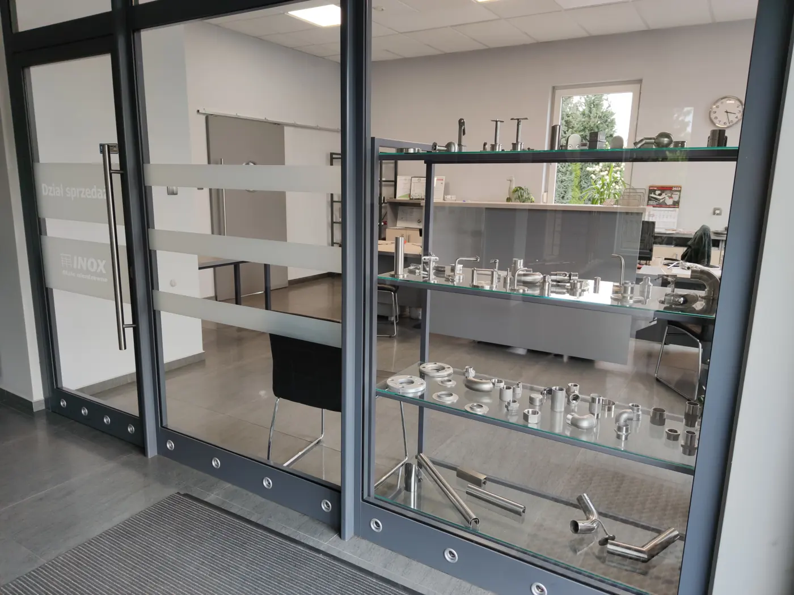

Strona główna / Dla domu
Balustrady ze stali nierdzewnej i szkła
Schodowe, tarasowe, balkonowe i daszki, na wymiar. Przyjedziemy bezpłatnie na miejsce, zmierzymy i w kilka dni podamy cenę.
Montujemy do ok. 100 km od Ostrowa Wielkopolskiego

Nie musisz znać wymiarów ani nazwy systemu
Wystarczy telefon albo krótka wiadomość. Do każdego klienta podchodzimy indywidualnie: spotykamy się na miejscu, omawiamy oczekiwania i możliwości techniczne, a potem robimy pomiar i wycenę. Wszystko w kilka dni. Jesteśmy otwarci na małe i duże realizacje i dopasujemy się do Twojego budżetu.
Bezpłatne spotkanie
Na miejscu realizacji, w dogodnym terminie.
Pomiar
Mierzymy sami, nie musisz niczego przygotowywać.
Dobór rozwiązań
Wzór, wypełnienie i sposób mocowania do Twoich schodów.
Wycena w kilka dni
Konkretna cena, bez zobowiązań.
Wykonanie i montaż
Z elementów robionych we własnym warsztacie.
Typy balustrad i nasze realizacje
Rozwiń typ, żeby zobaczyć opis i zdjęcia. Każda realizacja jest robiona na wymiar, więc traktuj je jako punkt wyjścia do rozmowy.

Schodowe wewnętrzne
Pręty poziome lub pionowe, pochwyt przyścienny · 8 zdjęć
Schodowe wewnętrzne
Pręty poziome lub pionowe, pochwyt przyścienny · 8 zdjęć
Balustrady na schody wewnętrzne ze stali nierdzewnej. Wypełnienie z prętów poziomych lub pionowych, pochwyt na balustradzie albo przyścienny. Sposób mocowania dobieramy na pomiarze: do stopnia albo od czoła schodów.
- schody proste, zabiegowe i ze spocznikiem
- balustrady antresoli i klatek schodowych
- pochwyty przyścienne do kompletu

Balustrady w czerni
Proste formy do nowoczesnych wnętrz · 6 zdjęć
Balustrady w czerni
Proste formy do nowoczesnych wnętrz · 6 zdjęć
Ta sama konstrukcja co w balustradach nierdzewnych, w kolorze czarnym. Proste słupki i poziome wypełnienie dobrze wyglądają przy jasnych ścianach i drewnianych stopniach.
Zapytaj o ten typ
Szklane, tarasowe i balkonowe
Szkło na słupkach lub mocowaniach punktowych · 6 zdjęć
Szklane, tarasowe i balkonowe
Szkło na słupkach lub mocowaniach punktowych · 6 zdjęć
Szkło bezpieczne na słupkach nierdzewnych albo na mocowaniach punktowych. Na tarasy, balkony, portfenetry, antresole i schody. Nie zasłania widoku i łatwo je utrzymać w czystości.
Zapytaj o ten typ
Balkonowe z prętów
Lekka stal szlifowana na elewację · 3 zdjęcia
Balkonowe z prętów
Lekka stal szlifowana na elewację · 3 zdjęcia
Balustrady balkonowe i tarasowe z rur i prętów nierdzewnych, mocowane do płyty od czoła albo od góry. Stal nierdzewna nie wymaga malowania i nie rdzewieje na zewnątrz.
Zapytaj o ten typ
Schody zewnętrzne i pochylnie
Poręcze przy wejściach i podjazdach · 5 zdjęć
Schody zewnętrzne i pochylnie
Poręcze przy wejściach i podjazdach · 5 zdjęć
Poręcze i balustrady przy schodach wejściowych, pochylniach i podjazdach. Robimy je dla domów, firm i przestrzeni publicznych.
Zapytaj o ten typ
Daszki nad wejściem
Szkło na nierdzewnych wspornikach · 2 zdjęcia
Daszki nad wejściem
Szkło na nierdzewnych wspornikach · 2 zdjęcia
Daszki nad drzwi wejściowe ze szkła na nierdzewnych wspornikach. Chronią przed deszczem i nie zabierają światła.
Zapytaj o ten typWłasne rozwiązania techniczne
Balustrady tworzymy głównie z elementów i systemów wykonanych u nas. Dzięki temu poradzimy sobie z trudną architekturą i niestandardowym projektem.
Mamy własny magazyn stali, park maszynowy i ekipę z wieloletnim doświadczeniem. Na wymiar robimy też pochwyty do drzwi, uchwyty i stelaże do klimatyzatorów i pomp ciepła, słupki wodne ogrodowe oraz elementy infrastruktury miejskiej.

Wzory do obejrzenia w biurze
Odwiedź biuro sprzedaży przy ul. Sadowej 26A i zobacz z bliska kilka standardowych wzorów na wystawie.
- Poniedziałek - piątek, 8:00-16:00Najlepiej zadzwoń wcześniej, żeby zastać specjalistę.
- Sadowa 26A, Ostrów WielkopolskiDojazd tylko od ul. Południowej.
- Wolisz zrobić balustradę sam?Sprzedajemy elementy, rury i profile, tniemy, szlifujemy i spawamy na zamówienie.
Umów bezpłatny pomiar
Napisz, jaki typ balustrady Cię interesuje i gdzie. Oddzwonimy, żeby ustalić termin spotkania.
- inox@inox.com.pl
- Realizacje do ok. 100 km od Ostrowa Wielkopolskiego